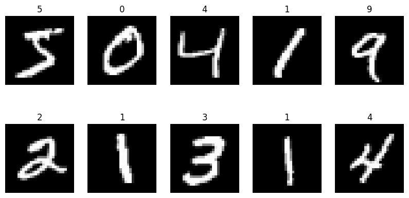
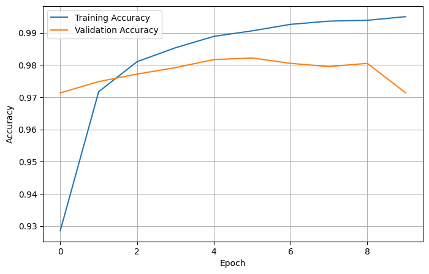
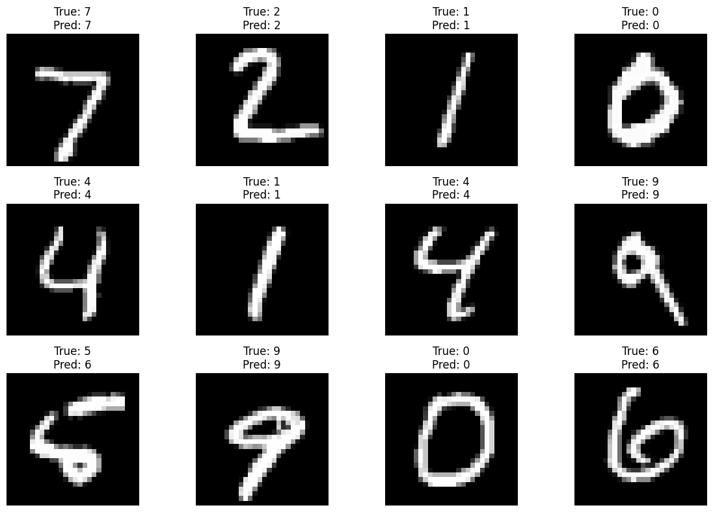
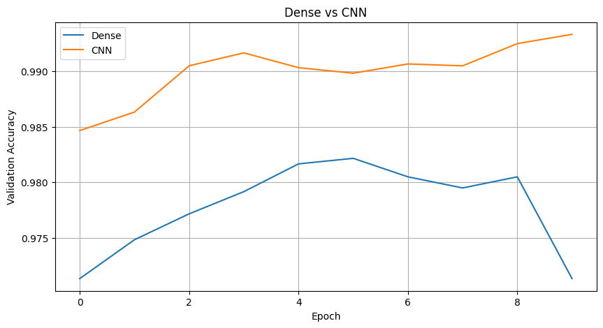

import tensorflow as tf
import numpy as np
import matplotlib.pyplot as plt
from tensorflow.keras.datasets import mnist
from tensorflow.keras.models import Sequential
from tensorflow.keras.layers import Dense, Flatten,Conv2D, MaxPooling2D# Load dataset
(x_train, y_train), (x_test, y_test) = mnist.load_data()
print("Training images:", x_train.shape)
print("Training labels:", y_train.shape)
print("Testing images:", x_test.shape)
print("Testing labels:", y_test.shape)
# Normalize pixel values
x_train = x_train.astype("float32") / 255.0
x_test = x_test.astype("float32") / 255.0Downloading data from https://storage.googleapis.com/tensorflow/tf-keras-datasets/mnist.npz 11490434/11490434 ━━━━━━━━━━━━━━━━━━━━ 0s 0us/step Training images: (60000, 28, 28) Training labels: (60000,) Testing images: (10000, 28, 28) Testing labels: (10000,)
plt.figure(figsize=(10,5))
for i in range(10):
plt.subplot(2,5,i+1)
plt.imshow(x_train[i], cmap='gray')
plt.title(y_train[i])
plt.axis("off")
plt.show()
model = Sequential([
Flatten(input_shape=(28,28)),
Dense(256, activation='relu'),
Dense(128, activation='relu'),
Dense(10, activation='softmax')
])/usr/local/lib/python3.12/dist-packages/keras/src/layers/reshaping/flatten.py:37: UserWarning: Do not pass an `input_shape`/`input_dim` argument to a layer. When using Sequential models, prefer using an `Input(shape)` object as the first layer in the model instead.
super().__init__(**kwargs)model.compile(
optimizer='adam',
loss='sparse_categorical_crossentropy',
metrics=['accuracy']
)
model.summary()Model: "sequential"
┏━━━━━━━━━━━━━━━━━━━━━━━━━━━━━━━━━┳━━━━━━━━━━━━━━━━━━━━━━━━┳━━━━━━━━━━━━━━━┓ ┃ Layer (type) ┃ Output Shape ┃ Param # ┃ ┡━━━━━━━━━━━━━━━━━━━━━━━━━━━━━━━━━╇━━━━━━━━━━━━━━━━━━━━━━━━╇━━━━━━━━━━━━━━━┩ │ flatten (Flatten) │ (None, 784) │ 0 │ ├─────────────────────────────────┼────────────────────────┼───────────────┤ │ dense (Dense) │ (None, 256) │ 200,960 │ ├─────────────────────────────────┼────────────────────────┼───────────────┤ │ dense_1 (Dense) │ (None, 128) │ 32,896 │ ├─────────────────────────────────┼────────────────────────┼───────────────┤ │ dense_2 (Dense) │ (None, 10) │ 1,290 │ └─────────────────────────────────┴────────────────────────┴───────────────┘
Total params: 235,146 (918.54 KB)
Trainable params: 235,146 (918.54 KB)
Non-trainable params: 0 (0.00 B)
BATCH_SIZE = 64
EPOCHS = 2history = model.fit(
x_train,
y_train,
epochs=EPOCHS,
batch_size=BATCH_SIZE,
validation_split=0.1,
verbose=1
)Epoch 1/10 844/844 ━━━━━━━━━━━━━━━━━━━━ 6s 5ms/step - accuracy: 0.9285 - loss: 0.2426 - val_accuracy: 0.9713 - val_loss: 0.1034 Epoch 2/10 844/844 ━━━━━━━━━━━━━━━━━━━━ 2s 3ms/step - accuracy: 0.9717 - loss: 0.0936 - val_accuracy: 0.9748 - val_loss: 0.0825 Epoch 3/10 844/844 ━━━━━━━━━━━━━━━━━━━━ 3s 4ms/step - accuracy: 0.9810 - loss: 0.0621 - val_accuracy: 0.9772 - val_loss: 0.0812 Epoch 4/10 844/844 ━━━━━━━━━━━━━━━━━━━━ 3s 3ms/step - accuracy: 0.9853 - loss: 0.0450 - val_accuracy: 0.9792 - val_loss: 0.0773 Epoch 5/10 844/844 ━━━━━━━━━━━━━━━━━━━━ 5s 3ms/step - accuracy: 0.9889 - loss: 0.0346 - val_accuracy: 0.9817 - val_loss: 0.0671 Epoch 6/10 844/844 ━━━━━━━━━━━━━━━━━━━━ 2s 3ms/step - accuracy: 0.9906 - loss: 0.0281 - val_accuracy: 0.9822 - val_loss: 0.0717 Epoch 7/10 844/844 ━━━━━━━━━━━━━━━━━━━━ 3s 4ms/step - accuracy: 0.9926 - loss: 0.0219 - val_accuracy: 0.9805 - val_loss: 0.0822 Epoch 8/10 844/844 ━━━━━━━━━━━━━━━━━━━━ 2s 3ms/step - accuracy: 0.9936 - loss: 0.0187 - val_accuracy: 0.9795 - val_loss: 0.0870 Epoch 9/10 844/844 ━━━━━━━━━━━━━━━━━━━━ 2s 3ms/step - accuracy: 0.9939 - loss: 0.0180 - val_accuracy: 0.9805 - val_loss: 0.0785 Epoch 10/10 844/844 ━━━━━━━━━━━━━━━━━━━━ 3s 3ms/step - accuracy: 0.9950 - loss: 0.0147 - val_accuracy: 0.9713 - val_loss: 0.1304
test_loss, test_acc = model.evaluate(x_test, y_test)
print("Test Loss:", test_loss)
print("Test Accuracy:", test_acc)313/313 ━━━━━━━━━━━━━━━━━━━━ 2s 4ms/step - accuracy: 0.9740 - loss: 0.1214 Test Loss: 0.12143903970718384 Test Accuracy: 0.9739999771118164
plt.figure(figsize=(8,5))
plt.plot(history.history['accuracy'], label='Training Accuracy')
plt.plot(history.history['val_accuracy'], label='Validation Accuracy')
plt.xlabel("Epoch")
plt.ylabel("Accuracy")
plt.legend()
plt.grid(True)
plt.show()
predictions = model.predict(x_test)
print(predictions[:1])
predicted_labels = np.argmax(predictions, axis=1)
print(predicted_labels[:1])313/313 ━━━━━━━━━━━━━━━━━━━━ 0s 1ms/step [[2.6008939e-10 6.7331008e-08 5.8602421e-07 1.7563593e-04 4.1827409e-13 1.7638033e-08 2.1117670e-14 9.9977517e-01 3.1354137e-08 4.8499511e-05]] [7]
plt.figure(figsize=(12,8))
for i in range(12):
plt.subplot(3,4,i+1)
plt.imshow(x_test[i], cmap='gray')
plt.title(f"True: {y_test[i]}\nPred: {predicted_labels[i]}")
plt.axis('off')
plt.tight_layout()
plt.show()
accuracy = np.mean(predicted_labels == y_test)
print("Manual Accuracy:", accuracy)Manual Accuracy: 0.974x_train_cnn = x_train.reshape(-1,28,28,1)
x_test_cnn = x_test.reshape(-1,28,28,1)
print(x_train_cnn.shape)(60000, 28, 28, 1)cnn_model = Sequential([
Conv2D(
filters=32,
kernel_size=(3,3),
activation='relu',
input_shape=(28,28,1)
),
MaxPooling2D(pool_size=(2,2)),
Conv2D(
filters=64,
kernel_size=(3,3),
activation='relu'
),
MaxPooling2D(pool_size=(2,2)),
Flatten(),
Dense(128, activation='relu'),
Dense(10, activation='softmax')
])cnn_model.compile(
optimizer='adam',
loss='sparse_categorical_crossentropy',
metrics=['accuracy']
)
cnn_model.summary()Model: "sequential_1"
┏━━━━━━━━━━━━━━━━━━━━━━━━━━━━━━━━━┳━━━━━━━━━━━━━━━━━━━━━━━━┳━━━━━━━━━━━━━━━┓ ┃ Layer (type) ┃ Output Shape ┃ Param # ┃ ┡━━━━━━━━━━━━━━━━━━━━━━━━━━━━━━━━━╇━━━━━━━━━━━━━━━━━━━━━━━━╇━━━━━━━━━━━━━━━┩ │ conv2d_1 (Conv2D) │ (None, 26, 26, 32) │ 320 │ ├─────────────────────────────────┼────────────────────────┼───────────────┤ │ max_pooling2d (MaxPooling2D) │ (None, 13, 13, 32) │ 0 │ ├─────────────────────────────────┼────────────────────────┼───────────────┤ │ conv2d_2 (Conv2D) │ (None, 11, 11, 64) │ 18,496 │ ├─────────────────────────────────┼────────────────────────┼───────────────┤ │ max_pooling2d_1 (MaxPooling2D) │ (None, 5, 5, 64) │ 0 │ ├─────────────────────────────────┼────────────────────────┼───────────────┤ │ flatten_1 (Flatten) │ (None, 1600) │ 0 │ ├─────────────────────────────────┼────────────────────────┼───────────────┤ │ dense_3 (Dense) │ (None, 128) │ 204,928 │ ├─────────────────────────────────┼────────────────────────┼───────────────┤ │ dense_4 (Dense) │ (None, 10) │ 1,290 │ └─────────────────────────────────┴────────────────────────┴───────────────┘
Total params: 225,034 (879.04 KB)
Trainable params: 225,034 (879.04 KB)
Non-trainable params: 0 (0.00 B)
cnn_history = cnn_model.fit(
x_train_cnn,
y_train,
epochs=10,
batch_size=64,
validation_split=0.1
)Epoch 1/10 844/844 ━━━━━━━━━━━━━━━━━━━━ 10s 7ms/step - accuracy: 0.9493 - loss: 0.1666 - val_accuracy: 0.9847 - val_loss: 0.0509 Epoch 2/10 844/844 ━━━━━━━━━━━━━━━━━━━━ 4s 5ms/step - accuracy: 0.9848 - loss: 0.0509 - val_accuracy: 0.9863 - val_loss: 0.0451 Epoch 3/10 844/844 ━━━━━━━━━━━━━━━━━━━━ 4s 4ms/step - accuracy: 0.9888 - loss: 0.0353 - val_accuracy: 0.9905 - val_loss: 0.0323 Epoch 4/10 844/844 ━━━━━━━━━━━━━━━━━━━━ 4s 5ms/step - accuracy: 0.9919 - loss: 0.0246 - val_accuracy: 0.9917 - val_loss: 0.0353 Epoch 5/10 844/844 ━━━━━━━━━━━━━━━━━━━━ 3s 4ms/step - accuracy: 0.9936 - loss: 0.0194 - val_accuracy: 0.9903 - val_loss: 0.0328 Epoch 6/10 844/844 ━━━━━━━━━━━━━━━━━━━━ 4s 4ms/step - accuracy: 0.9951 - loss: 0.0151 - val_accuracy: 0.9898 - val_loss: 0.0405 Epoch 7/10 844/844 ━━━━━━━━━━━━━━━━━━━━ 4s 5ms/step - accuracy: 0.9966 - loss: 0.0112 - val_accuracy: 0.9907 - val_loss: 0.0398 Epoch 8/10 844/844 ━━━━━━━━━━━━━━━━━━━━ 4s 5ms/step - accuracy: 0.9969 - loss: 0.0098 - val_accuracy: 0.9905 - val_loss: 0.0409 Epoch 9/10 844/844 ━━━━━━━━━━━━━━━━━━━━ 4s 4ms/step - accuracy: 0.9975 - loss: 0.0076 - val_accuracy: 0.9925 - val_loss: 0.0399 Epoch 10/10 844/844 ━━━━━━━━━━━━━━━━━━━━ 4s 4ms/step - accuracy: 0.9978 - loss: 0.0063 - val_accuracy: 0.9933 - val_loss: 0.0366
dense_loss, dense_acc = model.evaluate(
x_test,
y_test,
verbose=0
)
cnn_loss, cnn_acc = cnn_model.evaluate(
x_test_cnn,
y_test,
verbose=0
)
print("Dense Accuracy :", dense_acc)
print("CNN Accuracy :", cnn_acc)Dense Accuracy : 0.9739999771118164
CNN Accuracy : 0.9909999966621399import matplotlib.pyplot as plt
plt.figure(figsize=(10,5))
plt.plot(history.history['val_accuracy'],
label='Dense')
plt.plot(cnn_history.history['val_accuracy'],
label='CNN')
plt.xlabel("Epoch")
plt.ylabel("Validation Accuracy")
plt.title("Dense vs CNN")
plt.legend()
plt.grid(True)
plt.show()
print("="*40)
print("MODEL COMPARISON")
print("="*40)
print(f"Dense Accuracy : {dense_acc:.4f}")
print(f"CNN Accuracy : {cnn_acc:.4f}")
if cnn_acc > dense_acc:
print("\nCNN performs better on MNIST.")
else:
print("\nDense performs better.")========================================
MODEL COMPARISON
========================================
Dense Accuracy : 0.9740
CNN Accuracy : 0.9910
CNN performs better on MNIST.pred = cnn_model.predict(x_test_cnn)
pred_label = pred.argmax(axis=1)
plt.figure(figsize=(12,8))
for i in range(12):
plt.subplot(3,4,i+1)
plt.imshow(x_test[i], cmap='gray')
plt.title(f"True: {y_test[i]}\nPred: {pred_label[i]}")
plt.axis('off')
plt.tight_layout()
plt.show()313/313 ━━━━━━━━━━━━━━━━━━━━ 1s 3ms/step